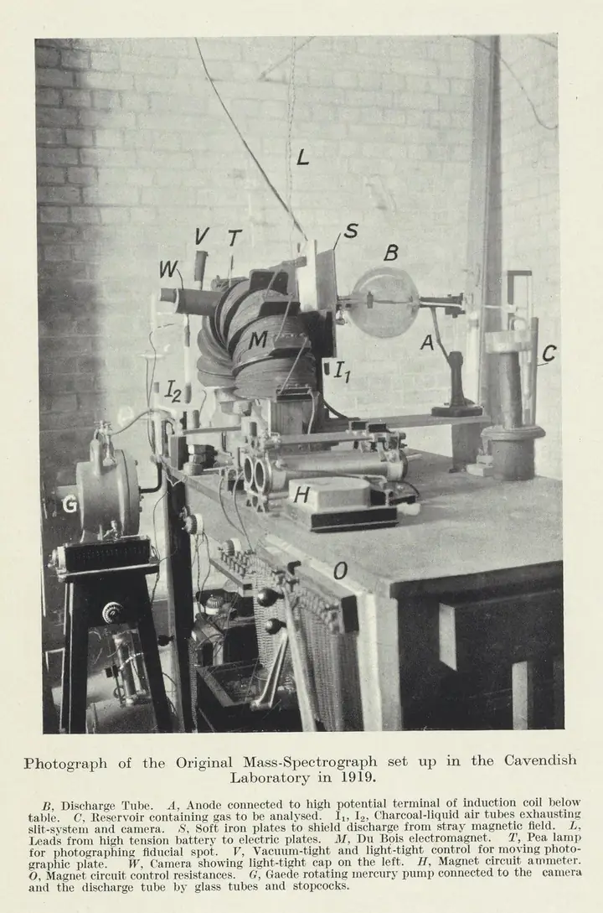
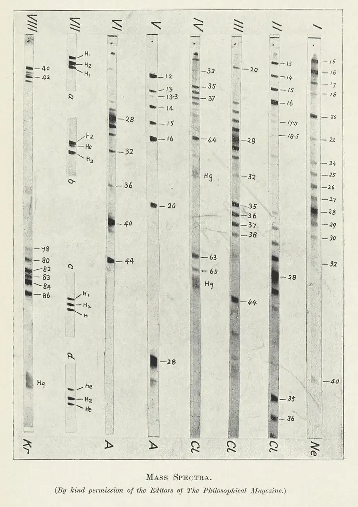
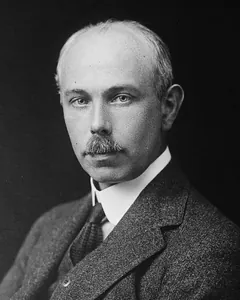

Aston e Dempster: isotopi e numeri interi
Nel 1919 due strumenti diversi trasformano le parabole di Thomson in spettri veri: uno fotografa le masse, l'altro le conta.
Aston: lo spettrografo di massa (1919)
Il metodo delle parabole aveva un limite: le tracce erano larghe e le masse erano attendibili solo a circa l'1%. Per distinguere gli isotopi servivano righe nette e misure molto più precise.
Francis Aston, a Cambridge, sostituì il sottile tubo circolare con due fenditure parallele. Il fascio diventa un nastro, e la sua intensità cala col quadrato dell'apertura invece che con la quarta potenza: arriva molto più segnale sulla lastra.
Focalizzare per velocità: un campo elettrico e un magnete in serie
Il nastro attraversa prima un campo elettrico, che lo apre in uno spettro di velocità: gli ioni più veloci deviano di meno. Un diaframma ne sceglie un gruppo, che entra nel campo di un magnete orientato in modo da piegarlo in senso opposto.
Le due deviazioni si compensano: ioni con lo stesso rapporto massa/carica ma velocità diverse convergono sullo stesso punto della lastra. È una focalizzazione per velocità, e la figura 35.1 la mostra.
Per analogia con lo spettrografo ottico, Aston chiamò «spettrografo di massa» lo strumento e «spettro di massa» l'immagine che produce.

La lastra: righe al posto delle parabole
Gli ioni anneriscono una lastra fotografica: ogni massa lascia una riga, e la posizione cresce quasi linearmente con la massa. Le righe si misurano per confronto con masse note, come quelle di idrogeno, carbonio, ossigeno e dei loro composti, presenti come impurezze o aggiunte apposta.

La regola dei numeri interi
Con le prime lastre Aston misurò le masse degli isotopi di molti elementi. Il risultato fu netto: entro circa una parte su mille, le masse sono numeri interi, e l'unica eccezione è l'idrogeno.
La regola riprende un'idea di Prout, che nel 1815 aveva immaginato tutti gli atomi costruiti con idrogeno. Per questa scoperta e per l'enunciato della regola Aston ricevette nel 1922 il premio Nobel per la Chimica.
Cloro 35 e 37: la massa atomica 35,5 è una media
La massa atomica del cloro è 35,46, ma sulla lastra non compare nessuna riga a 35,46. Le righe forti sono a 35 e a 37; quelle a 36 e 38 sono dovute all'acido cloridrico, e lo conferma lo spettro degli ioni negativi, dove restano solo 35 e 37.
Il numero della tavola periodica è dunque una media pesata. Un calcolo semplice lo mostra: per ottenere 35,46 servono circa tre atomi di massa 35 ogni quattro, e uno di massa 37. Lo stesso vale per il neon: con un 10% di atomi di massa 22 la media dei due isotopi, 20 e 22, sale a 20,2.
La media è quello che pesa la bilancia; lo spettrometro vede gli atomi uno per uno. La differenza fra massa media e massa esatta di un solo isotopo è spiegata nel capitolo Dalla massa alla formula.
Il difetto di massa e l'effetto di impaccamento
La regola vale solo in prima approssimazione, e Aston lo diceva già nella conferenza per il Nobel. Quando protoni ed elettroni si stringono in un nucleo, la massa totale cambia un poco: Aston lo chiamò effetto di impaccamento e stimò scarti fino a due o tre parti su mille per lo stagno e lo xeno.
L'esempio più importante è l'idrogeno. Quattro nuclei di idrogeno pesano più di un nucleo di elio, quindi trasformare idrogeno in elio fa sparire una quantità di massa. Quello scarto, oggi chiamato difetto di massa, è la misura dell'energia di legame del nucleo.
Dempster: lo spettrometro a 180° (1918)
Nel 1918, prima dello spettrografo di Aston, Arthur Dempster pubblicò sulla Physical Review un metodo diverso: invece di una lastra, una misura elettrica. Aston stesso ricorda che con il metodo di Dempster furono analizzati magnesio, calcio e zinco.
Focalizzare per direzione
Gli ioni sono accelerati da una tensione U ed entrano in un campo magnetico uniforme B. Descrivono una semicirconferenza di raggio r = √(2mU/q)/B: gli ioni pesanti curvano meno, quelli leggeri di più.
Dalla fenditura gli ioni escono con angoli leggermente diversi, ma dopo 180° ricadono quasi tutti nello stesso punto, a distanza 2r dalla fenditura. È una focalizzazione per direzione: l'energia è fissata dalla tensione, quindi qui non serve un campo elettrico.
Il settore a 180°
Contare gli ioni con un elettrometro
All'uscita gli ioni arrivano su un collettore, e un elettrometro misura la corrente che portano. Si varia il campo (o la tensione) e le masse cadono una dopo l'altra sulla fenditura.
Il risultato è un grafico di corrente contro campo: l'altezza dei picchi dà direttamente le abbondanze relative, senza passare dall'annerimento di una lastra.
Ionizzare con elettroni: l'idea della sorgente EI
Per produrre gli ioni Dempster usò un fascio di elettroni che colpisce il gas: è l'idea della ionizzazione per impatto elettronico. Quel principio è rimasto la sorgente standard della spettrometria di massa di molecole piccole, descritta nel capitolo Ionizzazione EI e CI.
Due strade: spettrografo (lastra) e spettrometro (corrente)
- Spettrografo di Aston: registra tutte le masse insieme su una lastra, con una sola esposizione; focalizza per velocità.
- Spettrometro di Dempster: conta una massa alla volta come corrente; focalizza per direzione.
Le due idee tornano negli strumenti successivi: la focalizzazione per direzione nei settori magnetici, la registrazione simultanea di tutte le masse nei sistemi a piano focale.
Chi era
Francis William Aston (1877-1945)
Nato a Harborne, nel Regno Unito, il 1° settembre 1877, morto a Cambridge il 20 novembre 1945. Lavorò all'Università di Cambridge. Costruì lo spettrografo di massa nel 1919 e con esso mostrò che molti elementi stabili sono miscele di isotopi. Nel 1922 vinse il premio Nobel per la Chimica.

Arthur Jeffrey Dempster (1886-1950)
Nato a Toronto nel 1886, morto nel 1950. Insegnò fisica all'Università di Chicago dal 1916. Costruì lo spettrometro a 180° nel 1918. Nel 1935 pubblicò su Nature una nota sull'uranio: con una sorgente a scintilla trovò, accanto alla riga a 238, una debole componente a 235, con meno dell'1% dell'intensità.
Perché contava
- Le masse intere chiusero la questione degli isotopi per la maggior parte degli elementi.
- Gli scarti dai numeri interi diventarono la misura dell'energia di legame nucleare.
- La rivelazione elettrica e la ionizzazione con elettroni sono gli antenati della spettrometria di massa quantitativa e della sorgente EI.
Per capire meglio
Per capire meglio: Risoluzione e analizzatori (potere risolutivo)
Per capire meglio: Dalla massa alla formula (massa esatta e difetto di massa)
Per capire meglio: Ionizzazione EI e CI (la sorgente a impatto elettronico)
Fonti
- articoloAston F.W. (1919) A positive ray spectrograph. Philos. Mag. 38, 707-714. doi:10.1080/14786441208636004
- articoloAston F.W. (1919) The constitution of the elements. Nature 104, 393. doi:10.1038/104393b0
- storicoAston F.W. (1922) Mass spectra and isotopes, conferenza per il premio Nobel per la Chimica 1922. nobelprize.org; scheda del premio: nobelprize.org
- articoloDempster A.J. (1918) A new method of positive ray analysis. Phys. Rev. 11, 316-325. doi:10.1103/PhysRev.11.316
- articoloDempster A.J. (1935) Isotopic constitution of uranium. Nature 136, 180. doi:10.1038/136180a0
- storicoDownard K.M. (2007) Francis William Aston: the man behind the mass spectrograph. Eur. J. Mass Spectrom. 13, 177-190. doi:10.1255/ejms.878
- storicoGriffiths J. (2008) A brief history of mass spectrometry. Anal. Chem. 80, 5678-5683. doi:10.1021/ac8013065
- storicoBudzikiewicz H., Grigsby R.D. (2006) Mass spectrometry and isotopes: a century of research and discussion. Mass Spectrom. Rev. 25, 146-157. doi:10.1002/mas.20061
- webArthur Jeffrey Dempster (Wikipedia), per le date e la carriera.